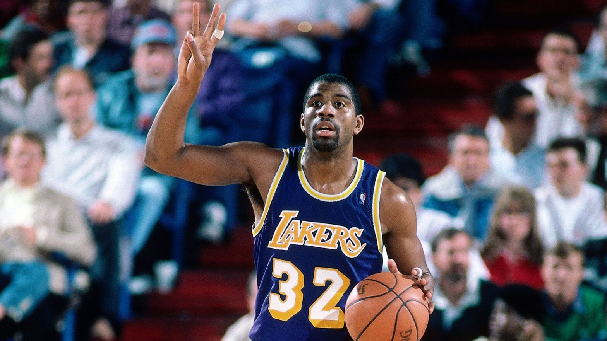
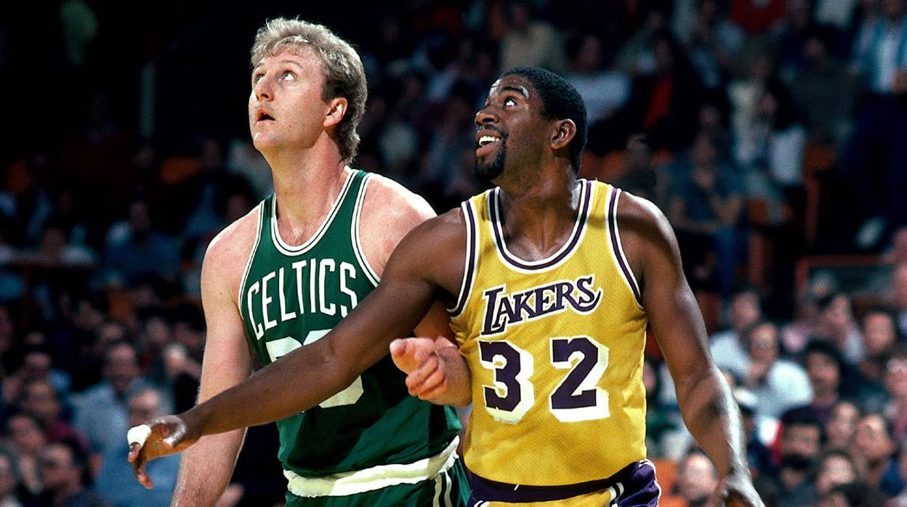
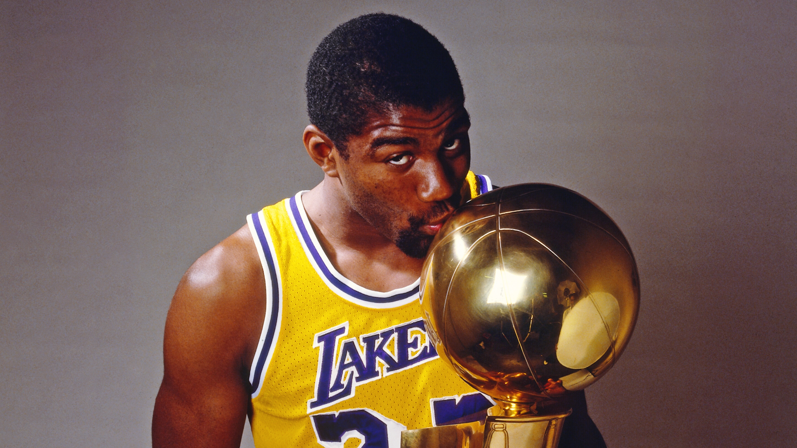

- 

- 
- 
Magic vs Air
La rivalidad entre Michael Jordan y Magic Johnson es una de las más destacadas en la historia del baloncesto. Jordan, con su estilo dominante y su habilidad para anotar puntos, se enfrentó a Johnson, un maestro del juego de equipo y del liderazgo en la cancha. Sus enfrentamientos en las Finales de la NBA dejaron momentos inolvidables y un legado duradero en el deporte. Ambos jugadores eran incansables competidores y su rivalidad trascendió más allá de la cancha, convirtiéndose en un símbolo de la lucha por la grandeza. Si deseas sumergirte en los detalles y las emociones de esta histórica rivalidad, te invito a presionar el siguiente enlace para descubrir más
Learn MoreSlim Reaper Durant vs King James
La rivalidad entre LeBron James y Kevin Durant es una batalla épica en el baloncesto moderno. Ambos son talentosos jugadores con habilidades únicas y un impacto significativo en sus respectivos equipos. LeBron, conocido por su dominio en todas las facetas del juego, se enfrenta a Durant, un anotador letal y un jugador versátil. Sus duelos en las Finales de la NBA han sido emocionantes y han generado momentos icónicos. Si quieres adentrarte en los detalles de esta apasionante rivalidad, te invito a presionar el siguiente enlace para descubrir más sobre la intensidad y la competencia entre LeBron James y Kevin Durant: Presiona aquí para saber más sobre la apasionante rivalidad entre LeBron James y Kevin Durant
Learn MoreSuperman O´neal vs Black Mamba
La rivalidad entre Shaquille O'Neal y Kobe Bryant es una de las más icónicas en la historia de la NBA. Ambos jugadores, quienes jugaron juntos en los Lakers, formaron una poderosa dupla que llevó al equipo a ganar tres campeonatos consecutivos. Sin embargo, su relación se volvió tensa debido a diferencias personales y conflictos de liderazgo. Sus diferencias se hicieron evidentes públicamente, generando un ambiente de rivalidad en el equipo. A pesar de ello, su talento individual y trabajo en conjunto los llevaron a la gloria. Tras la separación, se enfrentaron en la cancha en diversas ocasiones, creando momentos emocionantes para los aficionados. Si quieres adentrarte en los detalles y emociones de esta legendaria rivalidad, te invito a presionar el siguiente enlace para descubrir más: Presiona aquí para conocer más sobre la apasionante rivalidad entre Shaquille O'Neal y Kobe Bryant
Learn More